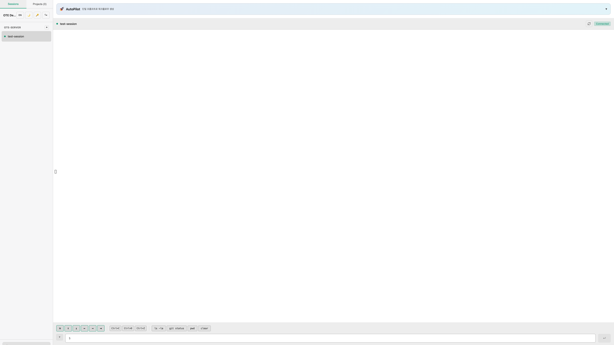
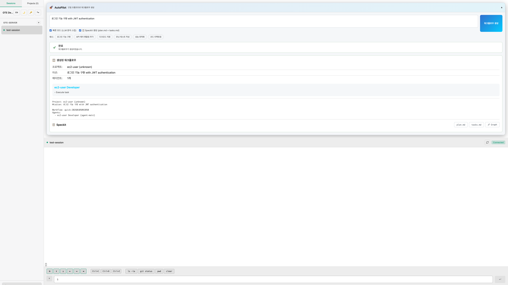

SessionCast OTE Test Report
Graph Feature & WebSocket Connection Test
Test Date: 2026-01-05 09:20 KST
📊 Test Summary
🌐
OTE Server
43.200.173.78:8080
✅
Test Result
All Passed
🔗
WebSocket
Connected
📋
Graph Feature
Working
| Test Case | Status | Description |
|---|---|---|
| WebSocket Connection | ✓ Pass | OTE 서버 (ws://43.200.173.78:8080/ws) 연결 성공 |
| Session List | ✓ Pass | ote-server/test-session 세션 정상 표시 |
| Terminal Streaming | ✓ Pass | 실시간 터미널 화면 스트리밍 정상 |
| AutoPilot Request | ✓ Pass | 워크플로우 생성 요청 및 응답 정상 |
| Speckit - plan.md | ✓ Pass | Plan 문서 생성 및 표시 정상 |
| Speckit - tasks.md | ✓ Pass | Tasks 문서 생성 및 표시 정상 |
| Speckit - Graph | ✓ Pass | SVG 의존성 그래프 렌더링 정상 |
🔧 Bug Fix Applied
⚠️ Root Cause: .env.production Override
.env.production 파일에서 VITE_WS_URL=wss://relay.sessioncast.io를 설정하여,
OTE 환경에서도 프로덕션 릴레이 서버로 연결을 시도하는 문제 발생
# .env.production (문제의 원인)
VITE_WS_URL=wss://relay.sessioncast.io
VITE_PLATFORM_API_URL=https://api.sessioncast.io✅ Solution: OTE WebSocket Override
OTE 환경에서는 환경변수를 무시하고 현재 호스트의 WebSocket URL을 사용하도록 수정
// App.tsx - 수정된 코드
// For OTE, always use local WebSocket regardless of env variables
const LOCAL_WS_URL = `${window.location.protocol === 'https:' ? 'wss:' : 'ws:'}//${window.location.host}/ws`;
const PROD_WS_BASE = import.meta.env.VITE_WS_URL || `...`;
const DEFAULT_WS_URL = IS_OTE ? LOCAL_WS_URL : `${PROD_WS_BASE}/ws`;Modified Files:
web-react/src/App.tsx- OTE WebSocket URL overrideweb-react/src/hooks/useWebSocket.ts- Improved reconnection logic
📸 Screenshots
🖥️ Terminal View
터미널 화면 - 세션 연결 및 실시간 스트리밍

🔗 Graph View
Graph 탭 - Task Dependencies 시각화

📋 Speckit Views
plan.md - 프로젝트 계획 문서

tasks.md - 태스크 목록 문서

📝 Test Details
AutoPilot Test Input:
Prompt: 로그인 기능 구현 with JWT authentication
Options:
- 빠른 모드 (LLM 분석 스킵): ✓ Enabled
- Speckit 생성 (plan.md + tasks.md): ✓ Enabled
Generated Workflow:
Project: ec2-user (unknown)
Mission: 로그인 기능 구현 with JWT authentication
Workflow: quick-20260105092050
Agents:
- ec2-user Developer (agent-main)
- Working Dir: /home/ec2-user
- Tasks: Execute task [P]
Graph Features Verified:
- ✓ SVG-based task node rendering
- ✓ Task status legend (Pending, In Progress, Completed)
- ✓ Parallel task indicator [P]
- ✓ Task count display
- ✓ Dependency arrow markers (for multi-task workflows)